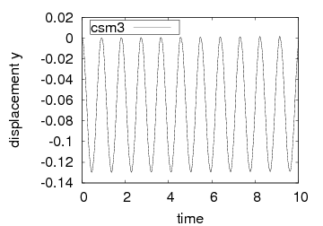
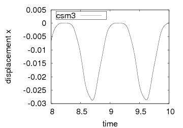
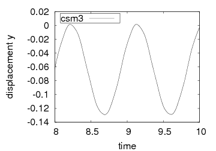

CSM tests
The structural tests are computed only for the elastic beam (without
the surrounding fluid) adding the gravitational force $") [
[
 ].
The CSM3 test is computed as a
time dependent case starting from the undeformed configuration while
the tests CSM1 and CSM2 are the steady state solutions.
].
The CSM3 test is computed as a
time dependent case starting from the undeformed configuration while
the tests CSM1 and CSM2 are the steady state solutions.
| par. dim. | CSM1 | CSM2 | CSM3 |
|---|---|---|---|
 [
[
 ]
] | 1 | 1 | 1 |
 | 0.4 | 0.4 | 0.4 |
 [
[
 ]
] | 0.5 | 2.0 | 0.5 |
 [
/span>
]
[
/span>
] | 1 | 1 | 1 |
 [
[
 ]
] | 1 | 1 | 1 |
 [
[
 ]
] | 0 | 0 | 0 |
 [
]
[
] | 2 | 2 | 2 |
| par. non-dim. | CSM1 | CSM2 | CSM3 |

| 1 | 1 | 1 |
|
| 0.4 | 0.4 | 0.4 |
 [
[
 ]
] | 1.4 × 106 | 5.6 × 106 | 1.4 × 106 |

| 0 | 0 | 0 |
|
| 0 | 0 | 0 |
|
| 2 | 2 | 2 |
| level | nel | ndof | ux of A [ × 10-3] | uy of A [ × 10-3 ] |
|---|---|---|---|---|
| 2+0 | 320 | 6468 | -7.17301 | -66.0263 |
| 3+0 | 1280 | 25092 | -7.18372 | -66.0817 |
| 4+0 | 5120 | 98820 | -7.18656 | -66.0965 |
| 4+1 | 6260 | 120512 | -7.18738 | -66.1008 |
| 4+2 | 8552 | 164092 | -7.18766 | -66.1023 |
| 4+3 | 13148 | 251448 | -7.18777 | -66.1029 |
| 5+0 | 20480 | 392196 | -7.18739 | -66.1009 |
| 5+1 | 22772 | 435776 | -7.18767 | -66.1023 |
| level | nel | ndof | ux of A [ × 10-3] | uy of A [ × 10-3 ] |
|---|---|---|---|---|
| 2+0 | 320 | 6468 | -0.468011 | -16.9536 |
| 3+0 | 1280 | 25092 | -0.468734 | -16.9684 |
| 4+0 | 5120 | 98820 | -0.468925 | -16.9723 |
| 4+1 | 6260 | 120512 | -0.468980 | -16.9735 |
| 4+2 | 8552 | 164092 | -0.468999 | -16.9739 |
| 4+3 | 13148 | 251448 | -0.469006 | -16.9740 |
| 5+0 | 20480 | 392196 | -0.468981 | -16.9735 |
| 5+1 | 22772 | 435776 | -0.469000 | -16.9739 |



| level | nel | ndof | ux of A [ × 10-3] | uy of A [ × 10-3] |
|---|---|---|---|---|
| 2+0 | 320 | 6468 | -14.384 ± 14.389 [1.0956] | -64.271 ± 64.595 [1.0956] |
| 3+0 | 1280 | 25092 | -14.402 ± 14.406 [1.0956] | -64.352 ± 64.679 [1.0956] |
| 4+0 | 5120 | 98820 | -14.404 ± 14.408 [1.0956] | -64.371 ± 64.695 [1.0956] |
| 2+0 | 320 | 6468 | -14.632 ± 14.636 [1.0978] | -64.744 ± 64.907 [1.0978] |
| 3+0 | 1280 | 25092 | -14.645 ± 14.650 [1.0978] | -64.765 ± 64.946 [1.0978] |
| 4+0 | 5120 | 98820 | -14.645 ± 14.650 [1.0978] | -64.766 ± 64.948 [1.0978] |
| 2+0 | 320 | 6468 | -14.279 ± 14.280 [1.0995] | -63.541 ± 65.094 [1.0995] |
| 3+0 | 1280 | 25092 | -14.299 ± 14.299 [1.0995] | -63.594 ± 65.154 [1.0995] |
| 4+0 | 5120 | 98820 | -14.305 ± 14.305 [1.0995] | -63.607 ± 65.160 [1.0995] |